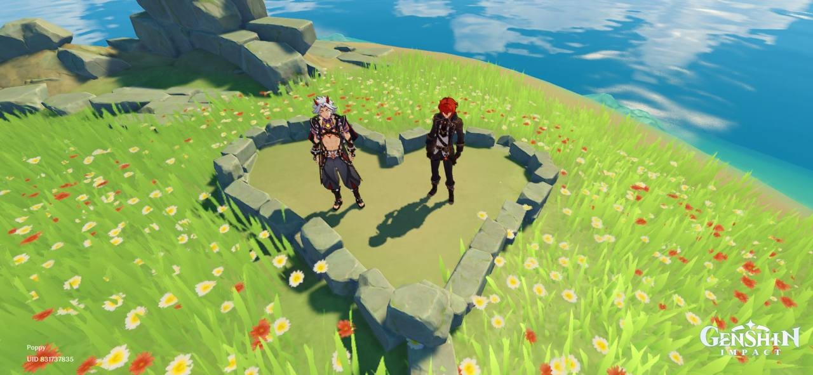

Engage in combat to farm materials to build your characters!
This game is full of interesting and engaging story quests to keep players entertained! Here is a short snippet of a recent story quest within the game.
Players can use various characters to explore the huge world map within the game! They can open chests for treasures, fight enemies for materials, or simply pick them up from the open world itself, including fruits, or gathering wood that you can chop directly from trees.
Engaging in combat with enemies will drop special materials to build your characters and weapons! There are limited enemies daily, so players tend to do this over a period of time to collect lots of materials.
Players have access to their personal mini worlds to decorate as they please. Check out my outdoor market area!
Games are the most fun when playing with others! Players can visit other players' worlds to explore, fight enemies, and even help each other complete quests. This is a screenshot of my friend (red hair) and I (white hair) visiting a secret island on the map!
